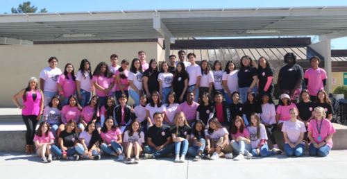
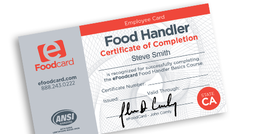
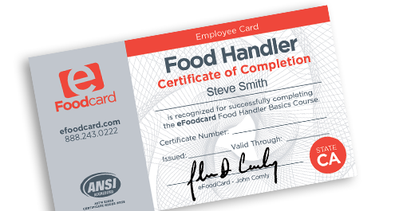

Emely Valencia Pena
My name is Emely Valencia Pena and I am currently a freshman at the University of California, Riverside majoring in Education. I am from Moreno Valley California and graduated from Canyon Springs High School, class of 2020. Some things I like to do in my freetime is watch Netflix for a relaxed day or go out with my friends to have fun to distract myself from any stress that I have. In high school I also liked going to any club events I had, I was part of many clubs that would do community service and help other people in the community. I especially liked teaching people any subject that they did not understand specifically in math. This helped me realize how much more I wanted to become a teacher and maybe want to teach math as well. My last year of high school was very unique having to transition half of my school year to online school. I missed out on a lot of high school traditions that I will neve be able to get back, but life goes on and now I am doing my first year of college online missing out on many usual memories students have in their first year of college.
I am majoring in education in hopes of becoming a dual immersion elementary teacher in the future. I want to work with 3rd or 4th graders. I really would like to teach younger kids because at that time is when they are most eager to learn and actually want to participate in class activities. I am thinking about double majoring in spanish as well. If I double major in Spanish, I can potentially teach middle school or high school if for some reason I can't get a job as an elementary teacher I can be a high school or middle school teacher. I want to continue my education at University of California, riverside to get my credentials and masters because they have a program in the Graduate School where I can get my credentials and masters in 1 year.
The work experience that I have is I worked at Jack in the Box from the end of June 2020 to November 2020. I had to quit because it was conflicting a bit with my school schedule and studying time. I was working too many hours a week and didn't leave enough time for school. After I had to quit Jack in the Box, I applied to work for DoorDash, which is as flexible as work can get. I started in November 2020 and am currently still working for DoorDash. I get to work whenever I want at whatever time of the day I want. I don't have a set schedule of when I have to work which is very good for when I have a lot of work to complete and don't have time to work. A job like this is great for me as a college student because some weeks are filled with more workload than others and I won't have a set schedule for work that I have to follow.
Experience
Driver
• Deliver food to people who order through the app
• Can pick up grocieries, food, or any itmes that people order
Cashier
• Take orders through Drive-thru and Lobby
• Charge people in Drive-thru and Lobby
• Bag cutomer orders and stock up
Secretary
• Took notes during meetings
• Helped with activity planning and setup
• Spread awareness around the school and community about bullying
• Helped many students feel included at school
Education
University of California, Riverside
Canyon Springs High School
Portfolio




